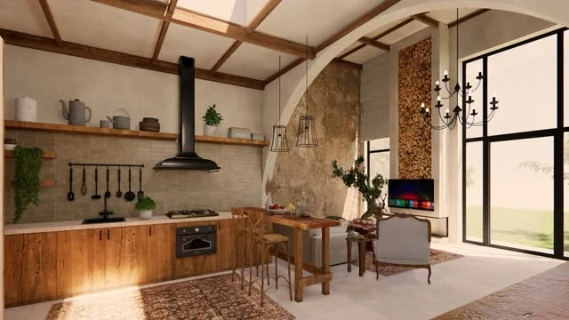
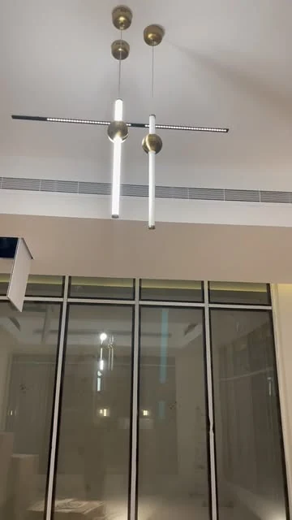

التصميم الداخلي
تطوير فكرة المساحة وتوزيع العناصر واختيار الاتجاه البصري بما يناسب نمط الاستخدام.
التصميم الداخلي
والتنفيذ / جازان

تصوّر تصميمي منشور
جازان
تصميم داخلي وتنفيذ في جازان. استكشف التصوّرات المنشورة ومشاهد من الموقع، وابدأ مشروعك من احتياج واضح.


الخدمات والتفاصيل
لياوت للتصميم الداخلي والتنفيذ في جازان. يعرض الحساب تصوّرات للمساحات الداخلية ومشاهد من مراحل العمل. صُنّفت الصور هنا لتمييز التصوّر التصميمي عن صور الموقع.
تطوير فكرة المساحة وتوزيع العناصر واختيار الاتجاه البصري بما يناسب نمط الاستخدام.
ربط الألوان والخامات والإضاءة بعناصر المساحة، ومناقشة تفاصيلها ضمن نطاق المشروع.
ناقش مرحلة مشروعك والأعمال المطلوبة ونطاق المتابعة والتنفيذ بحسب احتياجات الموقع.
المعرض
نماذج مختارة من صور النشاط المنشورة. اختر التصنيف وافتح الصورة لمشاهدة التفاصيل. تصوّرات التصميم مصنّفة بصورة مستقلة عن صور الموقع.
8 صور في المعرض
بداية أوضح
جهّز هذه المعلومات لتبدأ المحادثة مع الفريق بصورة واضحة عن احتياجك.
قبل التواصل
نعم، التصوّرات التصميمية لها تصنيف مستقل، وصورة الموقع مصنفة ضمن مراحل العمل.
المخططات والمساحة ونوع الاستخدام ومرحلة المشروع وصور مرجعية، لتحديد نطاق مناسب قبل الاتفاق.
اختر الخدمة وأضف التفاصيل التي تساعد الفريق على فهم طلبك. ستظهر لك رسالة جاهزة للمراجعة قبل فتح واتساب.